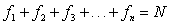
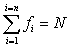
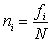
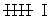
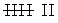
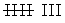

Frequency Distribution
The frequency distribution or frequency table is a tabular organization of statistical data, assigning to each piece of data its corresponding frequency.
Types of Frequencies
Absolute Frequency
The absolute frequency is the number of times that a certain value appears in a statistical study.
It is denoted by fi.
The sum of the absolute frequencies is equal to the total number of data, which is denoted by N.

This sum is commonly denoted by the Greek letter Σ (capital sigma) which represents 'sum'.

Relative Frequency
The relative frequency is the quotient between the absolute frequency of a certain value and the total number of data.
It can be expressed as a percentage and is denoted by ni.

The sum of the relative frequency is equal to 1.
Cumulative Frequency
The cumulative frequency is the sum of the absolute frequencies of all values less than or equal to the value considered.
It is denoted by Fi.
Relative Cumulative Frequency
The relative cumulative frequency is the quotient between the cumulative frequency of a particular value and the total number of data. It can be expressed as a percentage.
Example
A city has recorded the following daily maximum temperatures during a month:
32, 31, 28, 29, 33, 32, 31, 30, 31, 31, 27, 28, 29, 30, 32, 31, 31, 30, 30, 29, 29, 30, 30, 31, 30, 31, 34, 33, 33, 29, 29.
In the first column of the table are the variables ordered from lowest to highest, in the second column is the count or the number or times this variable has occured and in the third column is the score of the absolute frequency.
| xi | Count | fi | Fi | ni | Ni |
|---|---|---|---|---|---|
| 27 | I | 1 | 1 | 0.032 | 0.032 |
| 28 | II | 2 | 3 | 0.065 | 0.097 |
| 29 |  | 6 | 9 | 0.194 | 0.290 |
| 30 |  | 7 | 16 | 0.226 | 0.516 |
| 31 |  | 8 | 24 | 0.258 | 0.774 |
| 32 | III | 3 | 27 | 0.097 | 0.871 |
| 33 | III | 3 | 30 | 0.097 | 0.968 |
| 34 | I | 1 | 31 | 0.032 | 1 |
| 31 | 1 |
Discrete variables are used for this type of frequency table.
Grouped Frequency Distributions
The grouped frequency distribution is used if variables take a large number of values or the variable is continuous.
The values are grouped in intervals (classes) that have the same amplitude. Each class is assigned its corresponding frequency.
Class Limits
Each class is limited by an upper and lower limit.
Class Width
The class width is the difference between the upper and lower limit of that particular class.
Class Mark
The class mark is the midpoint of each interval and is the value that represents the whole interval for the calculation of some statistical parameters and for the histogram.
Construction of a Table of Grouped Frequency
3, 15, 24, 28, 33, 35, 38, 42, 43, 38, 36, 34, 29, 25, 17, 7, 34, 36, 39, 44, 31, 26, 20, 11, 13, 22, 27, 47, 39, 37, 34, 32, 35, 28, 38, 41, 48, 15, 32, 13.
1. The range is calculated by subtracting the highest and lowest values of the distribution.
2. Find a whole number slightly larger than the range that is divisible by the number of intervals that are needed.
It is desirable that the number of intervals is between 6 and 15.
In this case, 48 − 3 = 45. For the purpose of this table, increase the number to 50. Therefore, 50 : 5 = 10 intervals.
| xi | fi | Fi | ni | Ni | |
|---|---|---|---|---|---|
| [0, 5) | 2.5 | 1 | 1 | 0.025 | 0.025 |
| [5, 10) | 7.5 | 1 | 2 | 0.025 | 0.050 |
| [10, 15) | 12.5 | 3 | 5 | 0.075 | 0.125 |
| [15, 20) | 17.5 | 3 | 8 | 0.075 | 0.200 |
| [20, 25) | 22.5 | 3 | 11 | 0.075 | 0.275 |
| [25, 30) | 27.5 | 6 | 17 | 0.150 | 0.425 |
| [30, 35) | 32.5 | 7 | 24 | 0.175 | 0.600 |
| [35, 40) | 37.5 | 10 | 34 | 0.250 | 0.850 |
| [40, 45) | 42.5 | 4 | 38 | 0.100 | 0.950 |
| [45, 50) | 47.5 | 2 | 40 | 0.050 | 1 |
| 40 | 1 |